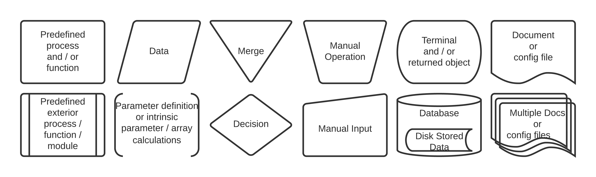

Module Overview
Algorithm Flowchart Definitions
We illustrate our definitions for the flowcharts presented throughout this document that describe the principal algorithm operations. We note that the flowcharts are not exhaustive and are not meant to describe the code to the level of individual operations. The flowcharts list the main variables and functions used along with how they are processed by the different modules and intrinsic functions, and the resulting outputs.
{kind=link}
The CLEDB Modules
The CLEDB inversion algorithm can be split into three parts:
The
CLEDB_BUILDmodule contains pre-configured scripts for generating a database used downstream to fit the observations. Fortran binaries and Bash scripting is used by this module. Running the default configuredrundb_1line.shscript for each line of your observation is enough in most cases. Please see the dedicated README-RUNDB for more detailed instructions.The
CLEDB_PREPINVmodule prepares the data for analysis and matches required databases to read into memory (for the 2-line branch). Two main functions SOBS_PREPROCESS and SDB_PREPROCESS match and prepare the data and databases for analysis. The ctrlparams and constants classes are imported separately and fed to the module.The
CLEDB_PROCmodule encompasses the main data analysis functions SPECTRO_PROC, BLOS_PROC, and/or CLEDB_INVPROC. These apply analytical solutions or database inversion schemes on the input observational data to recover the desired plasma and magnetic field parameters (e.g. theOUTPUTS).
Hint
The MAIN README contains instructions on how to end-to-end run the provided examples.
{kind=link}
The flowchart schematic presents the modules along with the main inputs and outputs. Each module is described separately in the following sections along with detailed operation flowcharts. The most important variables and functions are described for each inversion module component. The definitions and accompanying diagrams are not meant to be 1:1 mirrors of the coding, but merely to trace the most crucial operations and resulting outputs. Common terminology is defined in the last section.
Note
Additionally, more extended comments can be found in each module’s Python/Bash scripts.
The Python Modules
The following Python packages are required. For numerical computation efficiency, the inversion heavily relies on the Numpy and Numba packages.
- Numpy
Numpy provides fast vectorized operations on its self implemented-ndarray datatypes. All Python based modules are written in a Numpy-centric way. Functional equivalent pure Python coding is avoided when possible due significantly slower runtimes. Numpy version specific (1.23) documentation is found here.
- Numba
Numba implements just in time (JIT) compilation decorators and attempts where possible to perform loop-lifting and scale serial tasks on available CPU threads. Numba has two modes of operation, object-mode and non-python mode. Non-python mode is the desired target. It will maximize optimization and runtime speed, but is significantly limited in terms of Python and/or Numpy function compatibility. Object-mode has full Python compatibility but the applicable optimizations are significantly less effective in most situations.
A Numba fully-enabled implementation can utilize only a small subset of Python and Numpy functions. Significant data sanitation and statically defined function I/O are required in order to enable runtime optimization and parallelization. Due to these sacrifices, coding implementations are not always clear and straightforward.
Danger
Numba non-python mode is not directly equivalent to parallel/loop-lifted runs. A decision on running a specific function in parallel needs manual consideration. Loop-lifting “all” non-python functions leads to significant worsening of execution efficiency. We use a control parameter described later-on to control the use of loop-lifting/parallelization, but only on functions that would benefit from the effect. A significant number of non-python compatible functions have implicit parallelization set to disabled for good reason.
Extensive documentation and examples can be found in the Numba documentation. The version specific (0.56.4) documentation is available here.
Attention
The
CLEDB_PREPINVmodule can only be compiled in Numba object-mode due to disk I/O operations that are not implemented in non-python mode. Object-mode is usually not faster than normal Python, but it does benefit from loop-lifting parallelization, that is beneficial to our usecase.
- pyyaml
YAML format library utilized in the ctrlparams class to enable or disable Numba global options.
- Scipy
Used for spectroscopic fitting and statistics.
- Jupyter, Jupyterlab, Matplotlib and Ipympl
Optional libraries for data visualization, plotting, widgets, etc.
- Glob, and OS
Additional modules used primarily by
CLEDB_PREPINVfor disk I/O operations.
- Time and Sys
Used during debug runs with high level of verbosity.
- Sphinx, Sphinx-rtd-theme and Mist-parser
Libraries for building documentation and processing markdown files. Disabled as these are not required by the inversion.